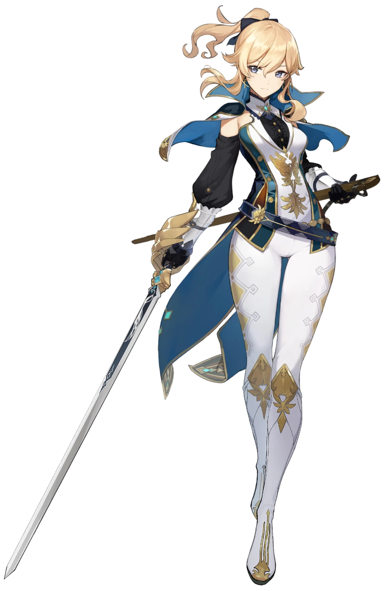
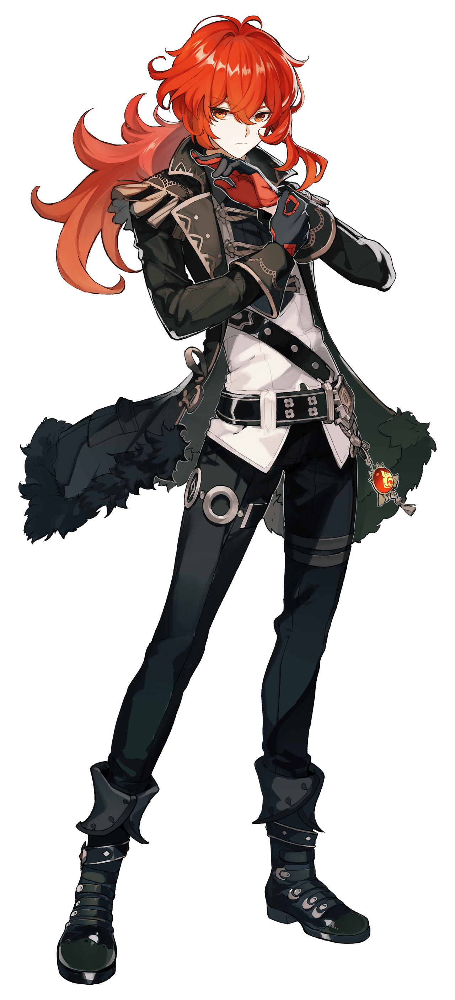
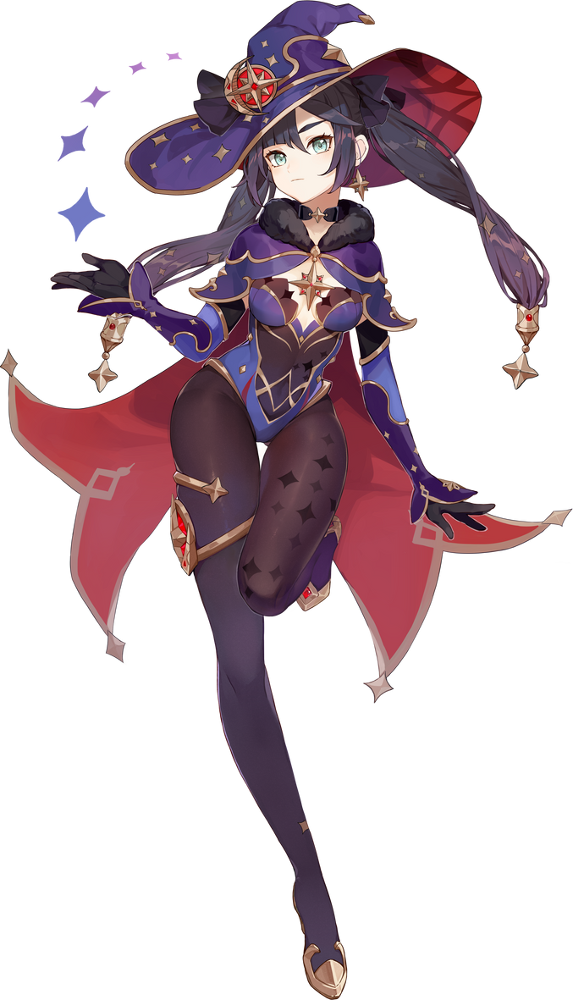

Jean
Jean, la Gran Maestra Intendente de los Caballeros de Favonius, siempre se ha dedicado religiosamente a sus tareas dentro de la orden y al mantenimiento de la paz en Mondstadt
Elemento: 

Diluc
Como el hombre más rico de Mondstadt, Diluc siempre muestra su lado más exquisito. Sin embargo, su verdadera naturaleza es la de un guerrero con una gran determinación.
Elemento: 

Mona
Una astróloga de gran habilidad y orgullo igualmente grande, se ha instalado en Mondstadt para evitar la ira de su maestra después de leer sin saberlo el diario de este última.
Elemento: